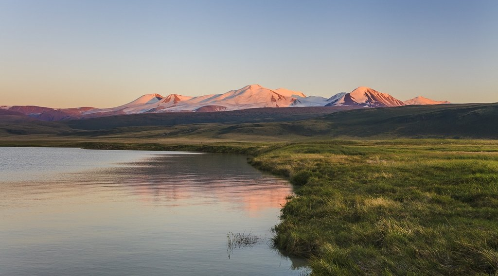

Домбай, пожалуй, самый популярный горнолыжный курорт Кавказа. Сюда приезжают те, кто хочет полюбоваться на красоту гор и покататься на лыжах без лишних переплат. Домбай находится в Карачаево-Черкесии, в середине Тебердинского заповедника. Местные жители очень приветливы, горные склоны ждут своих лыжников, а природа здесь просто потрясающая.
Ближайшие к Домбаю аэропорты и вокзалы — Ставрополь и Минеральные Воды, до них около 225 км. Прямой перелет из Москвы занимает в среднем 2 ч 15 мин, из Санкт-Петербурга — 3 часа. Рекомендуем лететь до Минеральных вод — рейсов гораздо больше, чем до Ставрополя и билет стоит дешевле.
В Домбае зима начинается в середине декабря и заканчивается в апреле. Сюда приезжают те, кто любит кататься вне трасс — и лыжники, и сноубордисты. Очень сложных трасс в Домбае нет, зато есть возможность отправиться на вертолете к диким горным вершинам, устроив себе фантастический экстремальный спуск.
Большинство отелей курорта — недорогие трехзвездочные гостиницы и базы отдыха. Все они находятся в пешей доступности от подъемников. Также здесь вы найдете множество кафе, баров, шашлычных и пунктов проката горнолыжного снаряжения. В местных кафе и ресторанах можно вкусно поесть (на вершине, кстати, дешевле и порции больше).
Ночь проживания в трехзвездочном отеле обойдется от 2400 рублей за ночь за двухместный номер и от 1000 рублей в приличном хостеле или гостевом доме. Стоимость ски-пасса на полный день на новый комплекс подъёмников стоит 1400 рублей (или 850 рублей для льготников — детей и пенсионеров). В старом комплексе дневного абонемента нет, нужно платить 100-150 рублей за каждый подъём. Можно приобрести ски-пасс на «Югославку» — 500 рублей за день. Стоимость 1 подъёма на маятниковой канатной дороге — 200-300 рублей.
В Карачае «Домбай» означает «Зубр». По одной из легенд, было время, когда этими могучими животными были богаты здешние леса. Название самой высокой горы в этом районе — Домбай-Ульген (4046 м) с карачаевского языка означает «Убитый зубр». Согласно другой легенде, Домбайская поляна стала так называться после того, как охотник по имени Доммай, преследуя туров, убил одного из них, но, не сумев сохранить равновесие, упал с высокой горы в пропасть и погиб.Домбай называют «сердцем гор». Он окружен ими со всех сторон. А красавица Белалакая — это особый символ курорта. Она возвышается над всей домбайской поляной и настолько прекрасна, что ей восхищались многие поэты.Необычное сооружение, которое вы можете увидеть на многих рекламных проспектах и открытках — оригинальная гостиница «Тарелка», выполненная в форме инопланетного корабля, скромно расположившаяся на склоне горы, на высоте 2 250 м над уровнем моря. Это творение финского архитектора Матти Сууронена является памятником архитектуры XX века и работает по сей день.
В свободное от катания время можно отправиться к красивым Муруджинским озерам, Голубому и Черному. В Домбае есть условия для альпинизма и парапланеризма, в том числе и для новичков. Вы сможете покататься на снегоходах, пройти конный или пеший маршрут по окрестностям, провести время на катке, полетать с инструктором на параплане, прокатиться в зорбе или получить порцию адреналина в спидрайдинге (экстремальном сочетании параплана и горных лыж).Летом на Домбае не менее интересно, чем в горнолыжный сезон. От поляны курорта берет свое начало огромное количество интересных туристических маршрутов. В прилегающей области Тебердинского заповедника находится множество необычайно живописных водопадов: Суфруджинские, Птышские, Чучхурский и другие; высокие горные озера — Клухор, Турье; уникальные деревья и растения.Домбай — это центр альпинизма и туризма на Кавказе. В последнее время он достаточно динамично развивается, расширяется инфраструктура курорта, но из недостатков можно отметить все-таки относительно небольшой набор трасс, очереди в сезон и пока еще недостаточно высокий уровень сервиса. Однако все это компенсируется необычайной красотой окружающих ландшафтов и особой чистотой воздуха, экологичностью курорта. Нелегко найти место с такими же природными богатствами, как Домбайская поляна. Живописные высокие скалы, великолепные каньоны, горные реки, снежные вершины, рододендроны в цвету и безмолвные ледники... Благодаря чистоте и свежести воздуха, насыщенного хвоей, а также минеральным источникам Домбай считается одним из лучших горнолыжных курортов России. Неслучайно некогда знаменитые швейцарские ученые и альпинисты сказали, что «за его красоту и богатое разнообразие ледников, роскошных лесов и растительности Домбай превосходит все, что было найдено в Альпах».Лучшими для катания считаются юго-западные склоны горы Мусса-Ачитара на высоте 1630-3168 м. Ровная спокойная трасса без крутых перепадов идеально подойдет для новичков. «Красные» и «черные» трассы находятся в нижней части горнолыжного склона.Всего на курорте 12 трасс различной сложности, крутизны и скорости общей протяженностью 25 км. Максимальная длина трассы 5 400 м, а средний перепад высот составляет 1450 м (с 1750 м до 3200 м). Несмотря на то, что зона катания здесь небольшая, здешние спуски могут удовлетворить вкусы как опытных горнолыжников, так и новичков.В Домбае работает 5 очередей подъемников. Среди них есть бугельные и кресельные, а также Маятниковая канатная дорога. У каждого подъемника свой владелец, каждый подъем оплачивается отдельно.В Домбае великолепная природа и чистый горный воздух. Отовсюду видна главная вершина западного Кавказа — Домбай-Ульген. Погода здесь ясная почти всегда, снежный покров устойчивый. С хребта Мусса-Ачитара открывается изумительный вид на долину Теберды и великолепный Эльбрус.
Уральские горы представляют собой уникальную горную систему, разделяющую огромный субконтинент Евразия на две части – Европу и Азию. Они берут свое начало в России от побережья Северного Ледовитого океана и, протянувшись на более чем 2500 км, заканчиваются в знойных пустынях соседнего Казахстана. Нашу страну горы Урала пересекают с севера на юг, проходя по пяти географическим зонам.Сама эта горная система, не просто разделяющая оба материка, но и являющаяся официально очерченным кордоном между ними, относится к Европе: граница обычно проводится по восточной подошве гор. Образовавшиеся в результате столкновения Евроазиатской и Африканской литосферных плит, Уральские горы охватывают огромную территорию. Она включает в себя просторы Свердловской, Оренбургской и Тюменской областей, Пермского края, Башкортостана и Республики Коми, а также Актюбинской и Кустанайской областей Казахстана. По своей высоте, не превышающей 1895 метров, горная система значительно уступает таким исполинам, как Гималаи и Памир. Например, вершины полярного Урала по уровню средние – 600-800 метров, не говоря уже о том, что по ширине хребта они еще и самые узкие. Однако в таких геологических характеристиках заложен несомненный плюс: они остаются доступными для человека. И речь тут идет не столько о научных исследованиях, сколько о туристической привлекательности тех мест, по которым они пролегают. Ландшафт Уральских гор поистине неповторим. Тут начинают свой бег кристально чистые горные ручьи и реки, вырастающие в более крупные водоемы. Такие большие реки, как Урал, Кама, Печора, Чусовая и Белая тоже протекают здесь.
Примерное расстояние от Москвы до региона — 1 300 км, а от Петербурга — около 2 000 км, поэтому чаще всего путешественники добираются сюда на самолете или поезде. Но можно приехать и на автомобиле или автобусе.Аэропорты на Урале есть в следующих городах:Екатеринбург,Челябинск,Тюмень,Пермь,Курган,Ханты-Мансийск,Магнитогорск,Сургут,Салехард,Нижневартовск
Особенности климата на Урале зависят от его географического положения. Эта область удалена от океанов, и находится в глубине континента Евразии. На севере Урал граничит с полярными морями, а на юге – с казахскими степями. Ученые характеризуют климат Урала как типичный горный, но на равнинах наблюдается климат континентального типа. Определенное влияние на эту область оказывает субарктическая и умеренная климатические зоны. В целом условия здесь весьма суровые, и значительную роль играют горы, выступая в качестве климатического барьера.
На Уральских горах в районе Чебаркуль лучшим отелем считается Семейный Курорт Утес.Семейный курорт Утёс расположен между двух озер Малый Теренкуль и Большой Кисегач на территории с 8,5 га парковой зоны реликтового леса. "Утес" ведет свою историю с 1946 года, на территории много знаковых исторических мест: это и объект культурного наследия - уникальная ротонда на берегу о. Теренкуль, на которой сегодня проходят самые красивые в области выездные свадебные регистрации, и полувековой обеденный зал с историческим мозаичным панно в стиле раннего СССР, и небольшая часовня, которая никого не оставляет равнодушным. Годы шли, менялись времена, менялись названия - профилакторий,санаторий "Утес", база отдыха, парк-отель "Утесофф"... Семейный курорт Утес сегодня - это круглосуточно охраняемая территория, 7 действующих корпусов, 135 гостиничных номеров разных категорий и уровня комфорта, конференц-залы, современная детская площадка, огромный выбор зон отдыха (мангальные зоны, крытая зона барбекю и уютная беседка), поле для мини-футбола, баскетбола, волейбола и других видов спорта, ежедневная анимация, бесплатная детская комната и охраняемая парковка для наших гостей.
Точные цены указываются при оформлении путёвок
Одна из самых ярких и незабываемых зимних достопримечательностей Урала – это Зюраткульский фонтан. Он возник в 1976 году, когда геологи пробурили разведочную скважину. Полезных ископаемых не нашли, зато попали в артезианский бассейн. Из скважины хлынула струя воды.Бьющий из земли фонтан зимой образует причудливую «сосульку» из голубого льда, высотой до 10-15 метров. Интересно, что из года в год она выглядит по-разному, никогда не повторяя предыдущую форму. Внешний вид зависит от температуры и особенностей ветра. Находится на территории национального парка «Зюраткуль» в Челябинской области.
Так же можно посетить Пещера Сказ (Шемахинская-1)Пещера Сказ представляет собой горизонтальную пещеру коридорного типа, состоит из лабиринта местами обводнённых ходов с сифонами. Образовалась благодаря подземной реке. Посещать эту пещеру нужно зимой, когда обводнённая привходовая часть замерзает и превращается в необычный ледяной каток. Если повезёт оказаться среди первых посетителей сезона, то можно полюбоваться кристально чистым, прозрачным льдом, под которым прекрасно видно дно. К концу зимы лёд затаптывается туристами и теряет прозрачность.
Зимой на Урале можно посетить горячие источники.Этот вариант подойдет для тех, кто не готов к активным телодвижениям после праздничных салатов, но и лежать на диване уже совесть не позволяет. Термальные источники – это ленивый вариант отдохнуть на свежем воздухе в окружении соснового леса и прийти в себя после Новогодней суеты.Оздоровительный эффект от такого вида отдыха уже давно не для кого не секрет – горячие воды, богатые минеральными веществами благоприятно сказываются на общем состоянии человека, в том числе на иммунитете и психологическом состоянии. Самый настоящий отдых для тела и души.Так же можно посетить Ледяной фонтан в национальном парке "Зюраткуль".Еще один повод добраться до национального парка «Зюраткуль» – знаменитый ледяной фонтан, который можно увидеть лишь зимой. Летом он, правда, тоже достаточно впечатляет – поток воды, вырывающаяся из-под земли на 9-10 метров вверх. Зимой водяной фонтан, под натиском погодных условий, превращается в ледяной, становясь уникальным природным объектом.В зимний период, фонтан также имеет внушительные размеры – в отдельные годы его высота достигала 12-16 метров. Ледяная фигура имеет приятный голубой оттенок, благодаря чистоте воды бьющей из-под земли. Ее форма каждый год меняется, – в каком виде замерзнут отдельные струи воды, зависит от окружающей температуры, силы и направления ветра.
Алтайские горы (Алтай)Золотые горы — так переводится Алтай с тюркских языков. Действительно, редкое место на Земле может соперничать с Алтайскими горами по природным богатствам, изумительным ландшафтам и чистоте.Алтайские горы — система хребтов, расположенных на территории нескольких государств Евразии — России, Казахстана, Монголии и Китая. Российские Алтайские горы, являющиеся самой высокой частью Сибири, находятся на территории двух субъектов страны — Республики Алтай и Алтайского края. Северный сосед горного региона — Новосибирская область, восточный — Кемеровская. "Сибирские Альпы", "российский Тибет" — так называют это удивительное место, привлекающее своей первозданной красотой, мощью и величием. Порожистые горные реки, кристально чистые озёра, бурлящие водопады, бесконечные хвойные леса и альпийские луга — щедрость алтайской природы завораживает и покоряет навсегда. Обширный участок региона, включающий в себя плоскогорье Укок, Катунский и Алтайский заповедники, Телецкое озеро и гору Белуху, входит в список Всемирного наследия ЮНЕСКО под названием «Алтай-Золотые горы».Рельеф Алтайских гор многообразен, здесь выделяются: участки древних равнин, альпинотипный ледниковый высокогорный рельеф, горы средней (1800-2000 метров) и низкой высоты (500-600 метров), глубокие котловины. Хребты изрезаны многочисленными реками, питающимися снегом. Бурные водные потоки втекают в знаменитые своей красотой озёра, лежащие в живописных долинах. В Алтайских горах зарождаются реки Бия и Катунь, которые, сливаясь, образуют Обь, — одну из самых полноводных и протяжённых рек России.Самый высокий хребет Алтайских гор — Катунский. Своими снежными склонами, острыми пиками, живописными озёрами и ледниками эта часть горной системы Алтая похожа на Альпы.Алтайские горы знамениты пещерами, которых здесь насчитывается более 300, особенно много их в бассейне рек Катунь, Ануй и Чарыш. Горный Алтай — край водопадов, самый высокий из которых — 60-метровый Текелю, впадающий в реку Аккем.

Удобнее всего добираться до Алтая из Новосибирска — поездом или автобусом до Барнаула или Бийска. Из этих городов есть несколько рейсов в день до Горно-Алтайска и других населённых пунктов региона. Если вы путешествуете на автомобиле, то из Новосибирска вам следует ехать по трассе М-52 (Чуйский тракт).
Погода в Алтайских горах непредсказуема, поэтому не стоит полагаться на прогнозы синоптиков. Находясь в горах в тёплый ясный день, вы можете стать свидетелем внезапного рождения облака и побывать в самой его гуще.Климат региона резко континентальный с холодной зимой и тёплым летом. Погода в каждом конкретном месте зависит от его высоты и преобладающих ветров. В Горном Алтае находится как самое тёплое место Сибири, так и её полюс холода. Климат формируется под влиянием арктических масс, тёплых и влажных ветров Атлантики и жаркого воздуха Средней Азии. Зима в регионе продолжается от 3 до 5 месяцев, одно из самых холодных мест — Чуйская долина, где температура опускается до -32°. Значительно теплее в южных районах Алтайских гор, — например, в районе Телецкого озера зима радует комфортными десятью градусами мороза. Весной и осенью часты похолодания и заморозки, продолжающиеся до середины июня в высокогорных районах. Самый тёплый месяц — июль со средней температурой от +14 до +16°; в высокогорьях — от +5 до +8°, здесь температура понижается на 0,6° с увеличением высоты на каждые 100 метров.Летом световой день в регионе продолжается 17 часов, — это больше, чем в Ялте или Сочи.
Отличным отелем еа Алтае считается Чепош Парк Алтай.Отель «Чепош Парк Алтай» с террасой расположен в поселке Чепош. В числе удобств принадлежности для барбекю и бесплатный Wi-Fi. В распоряжении гостей круглосуточная стойка регистрации, ресторан и детская игровая площадка. В отеле можно забронировать семейные номера.В каждом номере установлен шкаф для одежды. Все номера оснащены чайником, а в некоторых есть кухня с холодильником и плитой. Предоставляются полотенца и постельное белье.Гостям предлагают континентальный завтрак или завтрак по меню.Горно-Алтайск находится в 43 км от отеля «Чепош Парк Алтай», а поселок Чемал — в 22 км. Расстояние до аэропорта Горно-Алтайск составляет 44 км.
Цена отелей на Алтае состовляет от 2000 рублей за ночь
Телецкое озеро — подлинная жемчужина в россыпи алтайских озёр. Чистейшие воды, обрамлённые горами и вековыми кедрами, альпийские луга и великолепные водопады, удалённость от цивилизации — источники очарования знаменитого озера.
Плато Укок — охраняемая природная территория, место концентрации курганных захоронений различных хронологических эпох. Местные жители считают, что плоскогорье — преддверие небесного свода, «конец всему», особое священное место, которому они доверяют тела умерших. Во многих курганах, охлаждающихся вечной мерзлотой, найдены отлично сохранившиеся предметы быта, представляющие огромную историческую ценность. Уникальная природа плато и окружающих его Алтайских гор вдохновили художника Николая Рериха на создание всемирно известных полотен. В селе Верхний Уймон находится дом-музей живописца, где можно увидеть его картины и приобрести их копии.
Чемал — живописная местность Горного Алтая, где Катунь несёт свои воды мимо завораживающих своей неприступностью скалистых гор.
Полёты с Алтай-АвиаЭкскурсии на высоте птичьего полета на легких вертолетах Robinson – это высший пилотаж всех развлечений. Увидеть совсем с другого ракурса озера и горы, реки и бескрайние леса, ощутить на себе гравитацию и скорость – эти впечатления останутся с вами на всю жизнь.
Центр ездового собаководства «Большие коты»Самое няшное и пушистое место на Алтае – это конечно же место, где живут и тренируются ездовые собаки. Несмотря на свои спортивные подвиги (о чем вам обязательно расскажут их заботливые хозяева), кроме быстрой езды они больше всего на свете любят, чтобы их обнимали, гладили и чесали. Так что приготовьтесь к океану непреодолимого позитива – и конечно же сюрпризам, ведь где-то в «Больших котах» обязательно найдутся и те самые коты. Здесь хорошо будет остановиться с ночевкой – в уютных номерах удастся отлично выспаться, а общение за чашкой чая с жителями базы станет одним из самых теплых воспоминаний.
Полуостров Камчатка.Камчатка, расположенная на северо-восточной окраине России, представляет собой уникальный край, полный контрастов и совсем не похожий на остальную страну. Вулканы здесь соседствуют с ледниками, кипящие гейзеры и горячие источники со стремительными реками, водопады с озерами. Это природное многообразие не могло не стать основой для развития туризма, в частности, таких его направлений, как экспедиционное, горнолыжное и экстремальное. На Камчатке не придется скучать не только поклонникам активного отдыха, но и любящим тишину и единение с природой: где еще в России можно едва ли не весь день любоваться курящимися вершинами сопок, ласково поглаживаемыми лучами солнца?
Камчатку иногда называют «край географии», а в советские времена название этого полуострова, одного из крупнейших в стране, прочно закреплялось за последними партами в школьных классах. Над учениками, занимавшими там свои места, даже подшучивали: «Сидит на Камчатке». Действительно, эта земля ассоциируется с такими понятиями, как «дальний», «удаленный» и так далее. Однако сегодня Камчатка, несомненно, стала намного ближе, чем когда бы то ни было. И все благодаря активному развитию туристической инфраструктуры края. Чего вам здесь только не предложат для полноценного отдыха: это и насыщенные экскурсионные программы, и эксклюзивные туры с охотой и рыбной ловлей, подводным спортом, круизами по знаменитой Авачинской бухте, не говоря уже о конных и орнитологические путешествиях и, конечно, лечебно-оздоровительном и культурно-этнографическом туризме. Также стоит упомянуть снегоходные и вертолетные туры, но и это еще будет далеко не полный перечень.
В городе Елизово, что в 30 км от Петропавловска-Камчатского, находится аэропорт, принимающий рейсы из Москвы и Санкт-Петербурга, а также Магадана, Владивостока, Краснодара, Красноярска, Ростова-на-Дону, Новосибирска, Хабаровска.
Говоря о климате полуострова, нельзя не отметить, что огромное влияние на него оказывает близость вод Охотского и Берингова морей, а также Тихого океана. Эти громадные водные пространства действуют на сезонные колебания температур и придают климату, особенно прибрежных районов, морской характер. В целом, погодные условия Камчатки можно назвать океаническими: они относительно мягкие, характеризуются большим количеством осадков – примерно до 2000 мм в год. Высота снежного покрова тоже довольно внушительна: 2,5-3 м. Средняя температура зимой и летом на протяжении многих лет остается неизменной: в июле +13 градусов Цельсия, в январе – 16,4 градуса со знаком минус.
На юге полуострова (на то он, наверное, и юг) зимой сильных морозов не наблюдается, но, как ни странно, летом здесь совсем не жарко – дождливых дней очень много, часты туманы. А вот в северных и отдаленных от морей районах Камчатки климат обретает выраженно континентальный характер, на него влияют большие пространства суши Азиатского материка и защищенность от морей, обеспечиваемая горными хребтами. Эти особенности делают зиму длиннее, а летний период, наоборот, укорачивают. Неудивительно, что большинство экскурсионных туров организовываются в начале лета, а поездки в зимнее время осуществляются реже. В центральной части региона зимняя температура может достигать -40 градусов, а вот летом устанавливается 30-градусный зной
Пятизвёздочных отелей на Камчатке нет.Гостиницы и базы отдыха в основе своей располагаются в зданиях еще советской постройки, однако в них предусмотрено все необходимое для того, чтобы отдых путешественников был максимально комфортным. Номера в них, что называется, на все вкусы и запросы, начиная от простых и по-домашнему уютных и заканчивая апартаментами класса «люкс». Хороший уровень сервиса, не говоря уже о блюдах деликатесной камчатской кухни, отличает и местные кафе и рестораны.
Цены ны отели Камчатки начинаются от 3000 рублей
На Командорских островах бежит множество горных рек, богатых рыбой и низвергающимися водопадами. На острове Беринга находится единственный на весь архипелаг поселок Никольское, он же – центр Алеутского национального района. Этот населенный пункт связан с Петропавловском-Камчатским только воздушным сообщением. Здесь имеется уникальный краеведческий музей, в фондах которого хранятся редчайшие экспонаты. Например, пушка с легендарного пакетбота «Святой Петр», командиром на котором был сам Витус Беринг, или скелет Стеллеровой коровы. Тут представлены интересные образцы декоративно-прикладного искусства алеутов. Если окажетесь в бухте Командор, можете посетить могилу Беринга, первооткрывателя архипелага. К сведению туристов: посещение Командорских островов обычно включается в программу туров по предварительным заявкам и представляет собой одно- или двухдневную вертолетную экскурсию.
Ну, а теперь мы предлагаем вам переместиться в Долину гейзеров, которую по праву считают «жемчужиной» этого дальневосточного российского полуострова. Вообще, гейзеры – явление в природе очень редкое, они встречаются лишь в нескольких районах нашей планеты, и когда в 1941 году они были открыты на Камчатке географом Т. Устиновой, это событие стало настоящей сенсацией. На сегодняшний день в крае имеется 22 крупных гейзера, а также немало кипящих цветных озер, пульсирующих источников и грязевых котлов. Самыми крупными среди гейзеров являются Жемчужный, Фонтан, Великан и Большой, названия которых говорят сами за себя.

Еще одно неповторимое и незабываемое место на Камчатке – Ходуткинские горячие источники, расположившиеся на юге полуострова, у подножия вулканов Приемыш и Ходутка (последний, собственно, и дал им название). Они, если быть более точными, находятся прямо в воронке вулканического взрыва. Уникальность источников в том, что купаться в них можно круглый год.
Одним из занятий на Камчатке являются восхождения на вулканы, вершины которых представляют собой груды застывшей лавы причудливых форм и переливающиеся на солнце вечные ледники, а подножия буквально кипят жизнью. Причем, восхождения – как на спящие, так и действующие вулканы – осуществляют не только альпинисты, но и обычные любители. Главное условие: вы должны быть физически здоровым. На вершину туристов сопровождают опытные гиды-проводники. Они имеют соответствующие экипировку (шлем, приспособленная обувь) и специально обучены навыкам передвижения по ледникам. Лучшим временем для совершения восхождений является период с марта по октябрь.